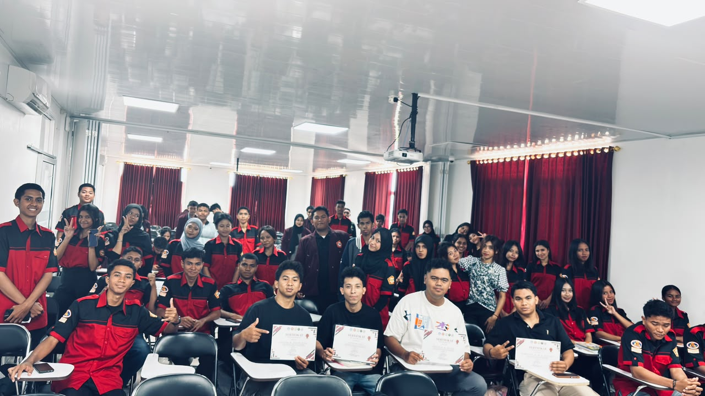
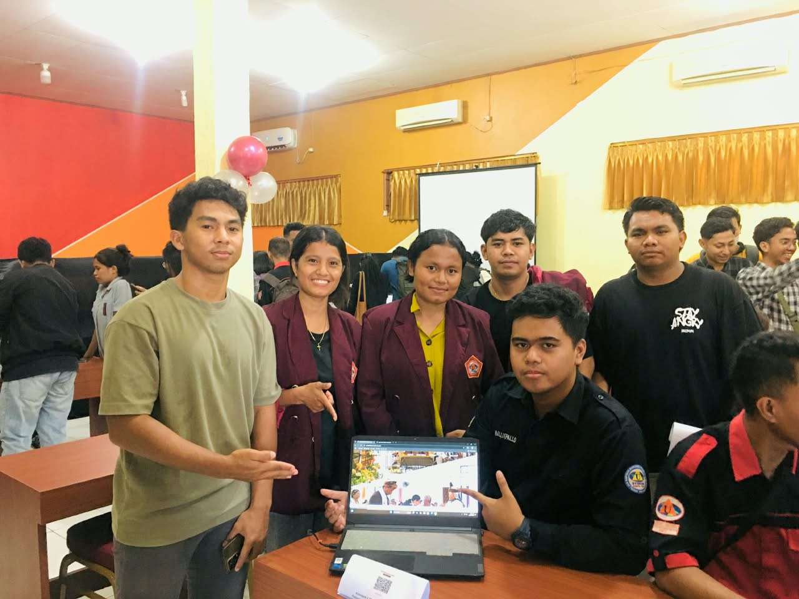
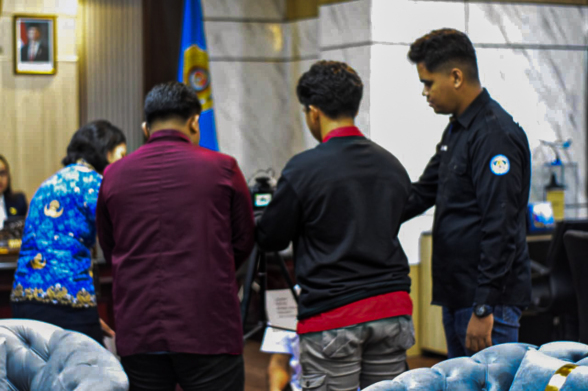
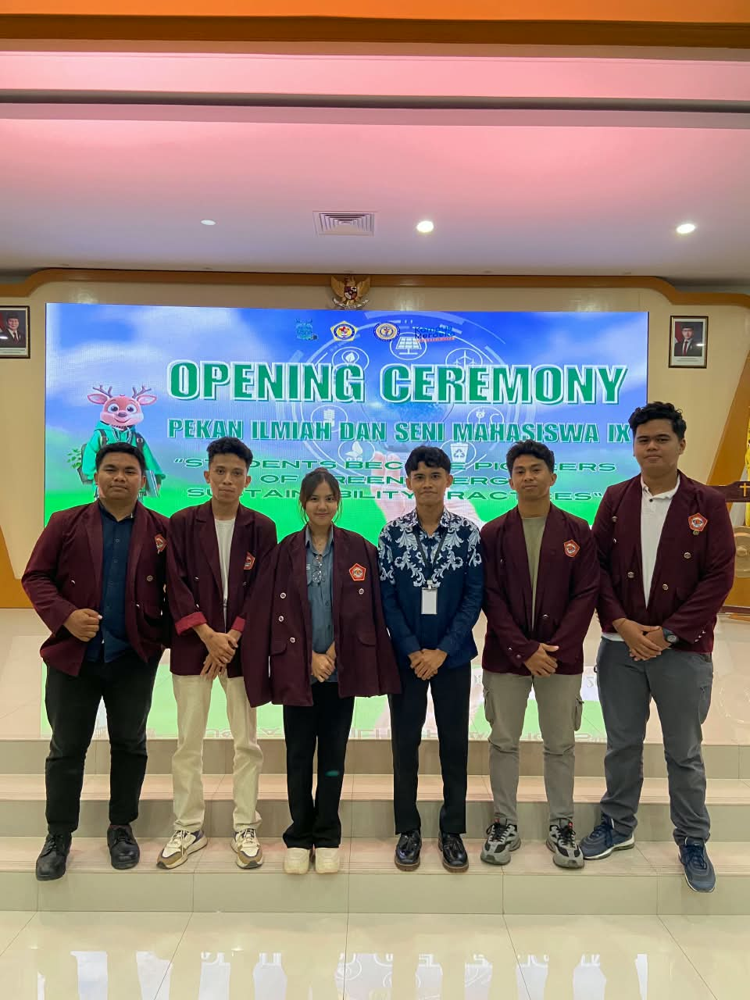
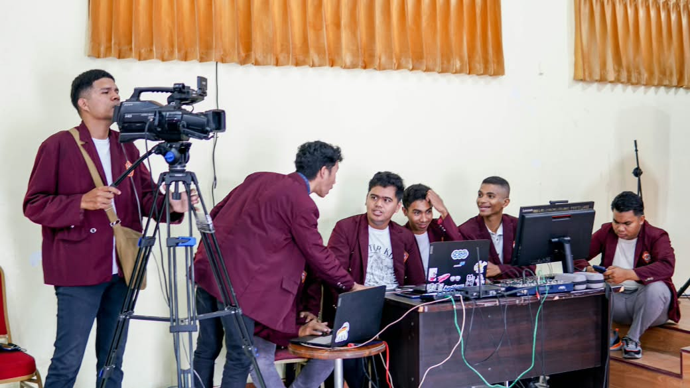
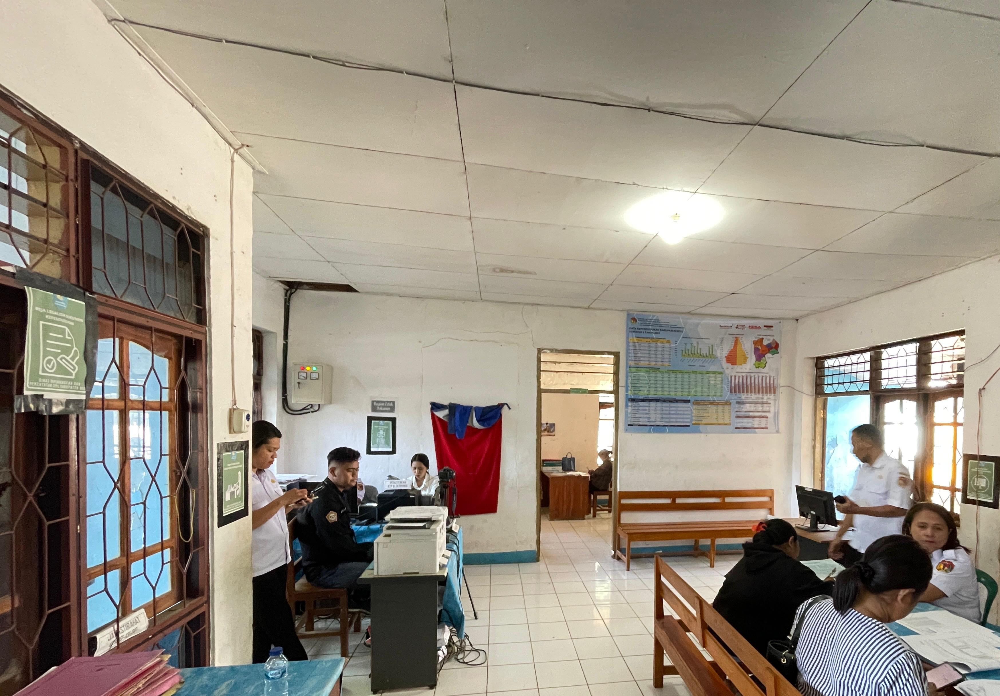
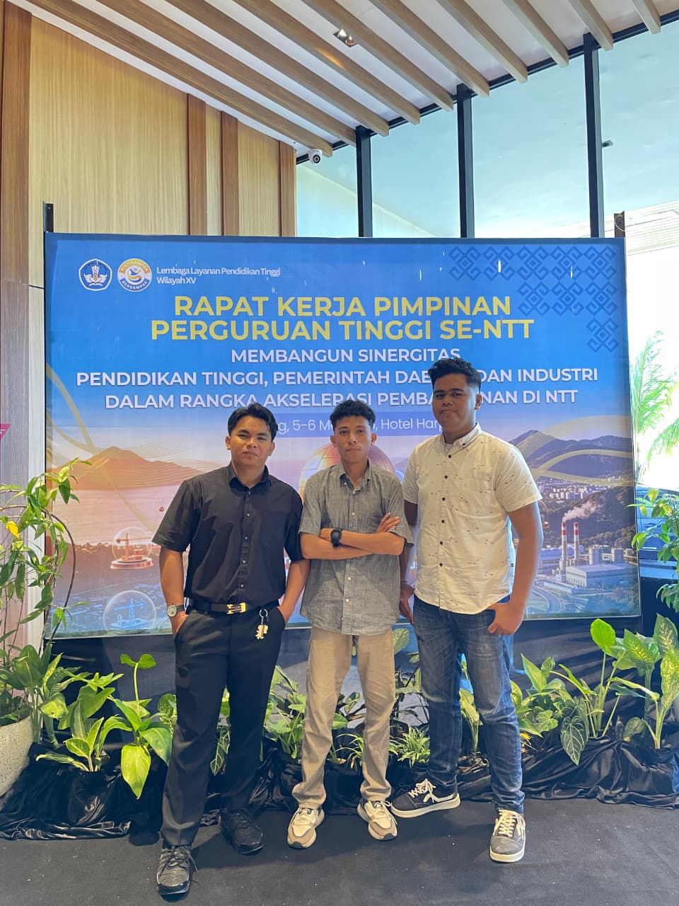
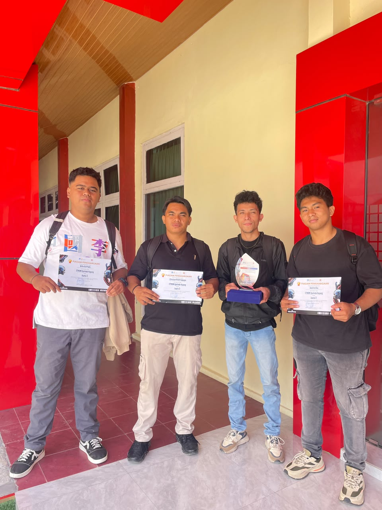
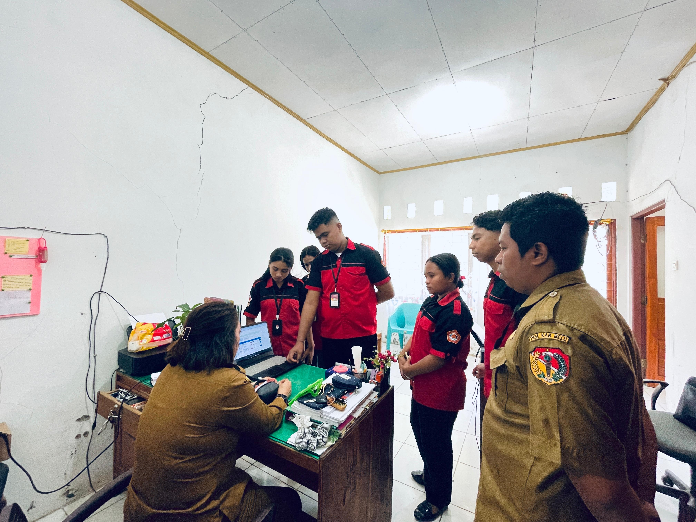
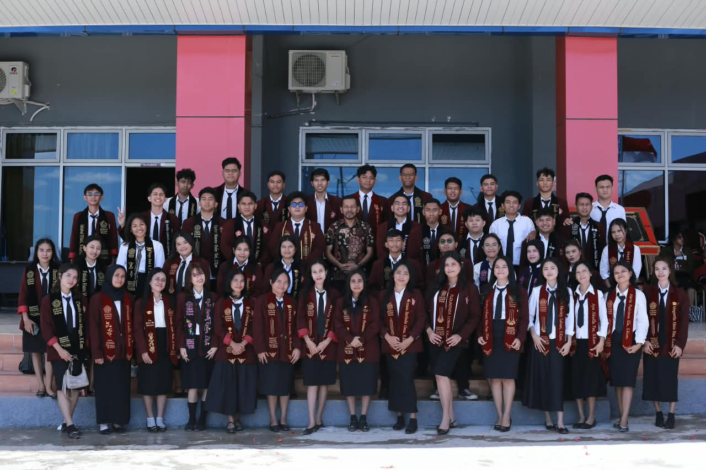

Machine Learning
Smart Waste & Detection System
Sistem informasi manajemen sampah cerdas yang dilengkapi model prediksi volume dan klasifikasi sampah otomatis berbasis CNN (Computer Vision).
Sarjana Informatika (S1) dari Universitas Uyelindo (IPK 3.68). Memiliki semangat belajar tinggi, disiplin, berdedikasi, serta berpengalaman sebagai Operator Multimedia, Petugas Pelayanan / Operator SIAK, Analis Data, dan Pemrograman Web modern.
class BilliePallo:
def __init__(self):
self.degree = "S1 Informatika — Universitas Uyelindo"
self.gpa = 3.68 # Sangat Memuaskan
self.roles = ["Operator Multimedia", "Operator SIAK", "Data Analyst", "Web Dev"]
self.cert = "Operator Komputer Senior (LSP Informatika / BNSP)"
self.location = "Oetete, Kupang, NTT"
self.email = "billypallo5@gmail.com"
def solve_challenge(self):
return "Semangat belajar tinggi, disiplin, berdedikasi individu & tim!"
# Inisialisasi Profil Billie
billie = BilliePallo()
print(billie.solve_challenge())Saya adalah pribadi yang memiliki semangat belajar tinggi, disiplin, bertanggung jawab, dan mampu bekerja secara individu maupun dalam tim.
Memiliki latar belakang pendidikan S1 Informatika di Universitas Uyelindo dengan capaian akademik IPK 3.68. Berpengalaman nyata dalam operasional multimedia siaran langsung, pelayanan publik & verifikasi database SIAK kependudukan, serta analisis data dan rekapitulasi cepat.
Cepat menguasai teknologi baru, teliti dalam pengolahan data, dan adaptif terhadap instruksi kerja.
Mampu berkomunikasi profesional, berintegritas tinggi dalam melayani masyarakat dan stakeholder.
Tersertifikasi Operator Komputer Senior LSP Informatika / BNSP, andal dalam live streaming & analitika.
Bertanggung jawab penuh atas pengelolaan operasional audio-visual, transmisi live streaming ibadah dan kegiatan gereja, tata suara sound system, pemeliharaan perangkat keras multimedia, serta dokumentasi dan publikasi media digital.
Bukti Riwayat PekerjaanMelayani pengurusan administrasi kependudukan masyarakat secara langsung, mengoperasikan Sistem Informasi Administrasi Kependudukan (SIAK), melakukan verifikasi berkas digital, pencetakan dokumen kependudukan, dan penataan arsip database sipil.
Bukti Riwayat PekerjaanMelakukan input data hasil perolehan suara secara real-time, tabulasi formulir rekapitulasi C1, verifikasi akurasi angka secara sistematis, dan penyusunan pelaporan tabulasi data pemilu yang transparan dan akurat.
Rekapitulasi Data TerverifikasiMenyelesaikan pendidikan Strata 1 (S1) program studi Informatika dengan prestasi akademik tinggi. Fokus studi mencakup Pemrograman Web, Rekayasa Perangkat Lunak, Pengolahan Citra, Basis Data Relasional, dan Analisis Sistem Komputer.
Ijasah Pendidikan ResmiJuara 3 Lomba Inovasi Digital tingkat Nasional yang diselenggarakan oleh LLDIKTI Wilayah 15 bersama perguruan tinggi bidang teknologi informasi.
Dokumen PencapaianPenghargaan Juara Favorit 1 pada Lomba Pameran Karya Ilmiah bidang manufaktur dan teknologi terapan teruji.
Dokumen PencapaianDipercaya sebagai pemateri dan instruktur pelatihan teknologi informasi (IT Bootcamp) untuk membekali keterampilan digital dan pemrograman praktis.
Dokumen PencapaianSertifikasi kompetensi resmi tingkat lanjut berstandar SKKNI bidang pengoperasian perangkat lunak perkantoran, keamanan data, dan otomasi kerja.
Dokumen Sertifikasi TerlisensiKeikutsertaan aktif dalam seminar dan konferensi ilmiah nasional bidang riset teknologi informasi, sistem komputasi, dan komunikasi digital.
Sertifikat PelatihanJelajahi rekam jejak kegiatan, seminar, pelatihan, hingga momen penting Billie Bernmarc Bungtilu Pallo melalui animasi 3D buka buku (3D Photobook) di bawah ini.
Buku digital ini merangkum serangkaian aktivitas akademik, pelatihan teknis, kompetisi keamanan siber, hingga keterlibatan sosial dan pengabdian masyarakat.

Foto 01Mendampingi serta memberikan materi instruksional di bidang keamanan jaringan siber dan perangkat cerdas Internet of Things (IoT).

Foto 02Mengikuti lomba Pameran Inovasi Digita Si-Amir Show dengan pembuatan sistem informasi pelayanan gereja GMIT Ararat Haukoto dan berhasil mendapatkan juara faborit 1

Foto 03Momen Pengambilan Video Ucapan Dies Natalis Oleh Ibu Wakil Walikota Kupang

Foto 04Mengikuti Lomba Pekan Ilmiah dan Seni Mahasiswa IX UNWIRA Kupang.

Foto 05Menjadi Panitia di bagian multimedia untuk menyelenggarakan Internasinal Seminar "FROM DATA TO DECISIONS" dengan narasumber PROF. KEWEI SHA, PH.D Dari University Of North Texas, USA

Foto 06melakukan magan di Kantor Disdukcapil Kabupaten Belu dan ditugasakan untuk menjadi operator Siak untuk melayani masyarakat dalam pembuatan dan pencetakan Dokumen Kependudukan

Foto 07Demonstrasi sistem dan showcase hasil karya proyek software di hadapan audiens dan penguji.

Foto 08Meraih Juara 3 dalam ajang lomba tingkat nasional yang diselenggarakan oleh LLDIKTI Wilayah XV dan STIKOM Uyelindo Kupang.

Foto 09Membuat Sistem Survey Kepuasan Layanan untuk mempermudah petugas dan masyarakat dalam mengisi survey dan melihat statistik Survey

Foto 10Puncak pencapaian akademis S1 Teknik Informatika sebagai awal melangkah di dunia industri teknologi profesional.
Setiap foto merekam langkah, perjuangan, dan komitmen untuk terus tumbuh di dunia Teknologi Informasi.
Hubungi Billie PalloS1 Informatika • Multimedia Specialist
© 2026 All Rights Reserved
Tersertifikasi Operator Komputer Senior LSP Informatika. Mahir administrasi digital, spreadsheet lanjutan, dan otomasi dokumen.
Kemampuan validasi numerik cepat, tabulasi data quick count, rekapitulasi data kependudukan SIAK, dan struktur database.
Pengembangan website responsif, antarmuka pengguna interaktif, arsitektur database, dan integrasi backend modern.
Pengoperasian kamera profesional, transmisi live streaming ibadah GMIT Kefas, manajemen switcher, dan tata suara audio-visual.
Produksi dan pasca-produksi video kegiatan, pemotongan transisi dinamis, sinkronisasi audio, color grading, dan pembuatan konten media sosial.
Pembuatan visual media promosi publikasi, poster seminar, brosur acara resmi, serta komunikasi dwibahasa aktif.
Sistem informasi manajemen sampah cerdas yang dilengkapi model prediksi volume dan klasifikasi sampah otomatis berbasis CNN (Computer Vision).

Platform layanan pemesanan dan kustomisasi alat airduino secara online, memungkinkan pelanggan memilih.

Sistem Informasi Gereja yang membantu pendataan jemaat dan pelayanan di Gereja Gmit Ararat Haukoto

Web Yang membantu petugas dukcapil dalam pendataan survey kepuasan masyarakat terhadap pelayan di Dukcapil Belu

Aplikasi untuk membedakan jenis sampah organik dan non organik berdasarkan gambar dan kamera realtime.
Sistem kasir instan untuk pengelolaan toko kosmetik, stok barang, perhitungan total transaksi, diskon, dan cetak bukti pembayaran.

Berpartisipasi dalam Seminar dan Konferensi Ilmiah Nasional (SEMMAU-VIII) dengan tema “Literasi Membangun Model Bisnis & Strategi Perusahaan Startup”. Kegiatan ini memperluas wawasan mengenai inovasi, literasi teknologi, serta pengembangan strategi bisnis berbasis digital

Dipercaya sebagai pemateri dalam kegiatan BABIM: Bootcamp IT Class yang diselenggarakan pada 19 September 2026 oleh panitia Bootcamp Universitas Uyelindo. Berkontribusi dalam berbagi pengetahuan dan keterampilan teknologi informasi serta mendukung peningkatan kompetensi digital peserta.

Menjadi instruktur materi keamanan siber dan IoT pada bootcamp yang diselenggarakan Himpunan Mahasiswa Teknik Informatika, 13 September – 1 November 2025.

Meraih juara 3 pada kompetisi inovasi digital tingkat perguruan tinggi wilayah XV yang diselenggarakan LLDikti Wilayah XV pada 2 Mei 2026.

Dinyatakan kompeten pada uji kompetensi skema Operator Komputer Senior (18 September 2026). Sertifikat kompetensi BNSP dalam proses penerbitan.

Sistem Informasi dan Pelayanan Gereja GMIT Ararat Haukoto” meraih Juara Favorit 1 pada lomba pameran karya ilmiah, 29 November 2024.

Penghargaan atas pencapaian akademik berprestasi selama masa perkuliahan Informatika.

Mengikuti webinar tingkat nasional bertema “Energi Cerdas & Masa Depan Digital: Peran Pemuda dalam Mencapai Indonesia Berkelanjutan 2045”, 21 Juni 2025.
billypallo5@gmail.com
Oetete, Oebobo, Kota Kupang, NTT
Jln Pemuda no 93, Kupang 85111Maumere, 28 Oktober 2003
Isi formulir di bawah untuk mengirim pesan langsung ke WhatsApp Billie Bernmarc Bungtilu Pallo: